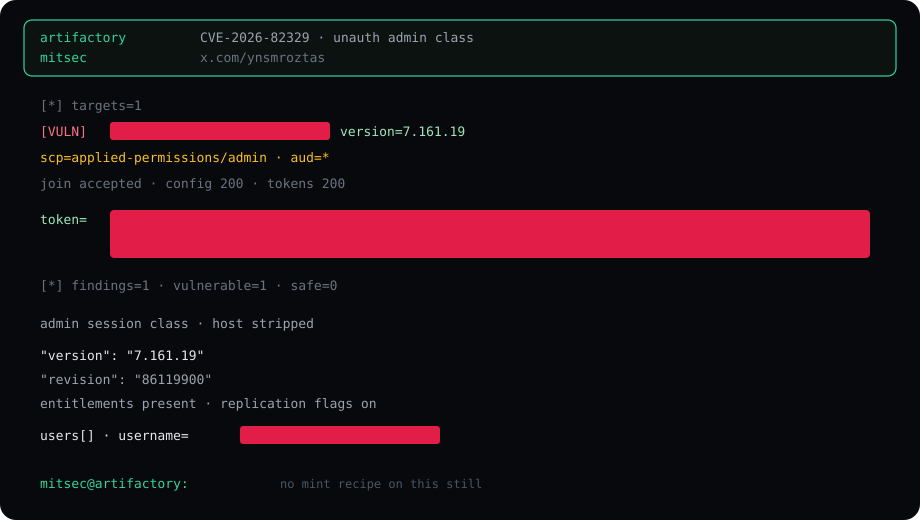

Summary
CVE-2026-82329 is an authentication bypass on self-hosted JFrog Artifactory. Access treated an empty join key as a live cluster secret. A default that everyone can know is not a secret. The impact class is an unauthenticated platform administrator session — not a low-priv user, not “an account was created later.”
Cloud-hosted Artifactory is a different product surface and is out of this note. CISA listed the CVE in KEV. That is operational urgency, not a recipe.

What the still actually shows
[VULN]on one authorized target.- Build string
7.161.19/ revision86119900. - Session scope class
applied-permissions/admin, audience*. - Admin-plane reads that returned 200 (version, user list, token list, repository list) — proof the session is platform-admin, not a login form bypass.
- A username row existed. The name is not published here.
CVE-2026-82329 JFrog Artifactory · self-hosted Access class CWE-287 empty default join key impact unauthenticated platform admin lab build 7.161.19 cloud not this class self-host default empty key accepted host / jwt / account names stripped mitsec@artifactory:
Affected lines
Vendor bands under 7.111.20, 7.117.27, 7.125.19, 7.133.28, 7.146.37, 7.161.19. Fixed counterparts start at the next build on each line. 7.191.14 is the later unified floor. Confirm on the box you own.
Fix
- Upgrade before you argue about keys.
- Set a join key that is not empty. Restart Access so the old default is dead.
- Rotate tokens issued while the box was on a vulnerable build.
- If it was on the public internet, treat the instance as compromised until logs say otherwise.
Repo
The public helper stays on GitHub. This page is the field note and the redacted still — not a mirror of the script, not a copy of live tokens.